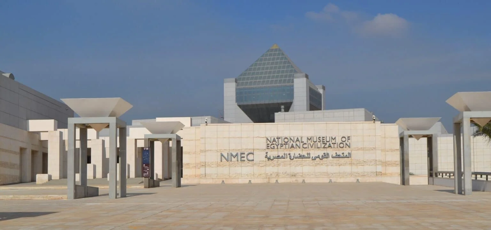

Mission and Vision
NMEC's Vision
Presenting the tangible and intangible Egyptian heritage within a cultural framework that allows visitors
from
different backgrounds to easily relate to the objects in the display
while acquiring a deeper understanding of the Egyptian culture in a welcoming and exciting environment.
Moreover, NMEC aims at becoming a unique cultural hub in the region mixing antiquities with other aspects of
culture including music and art.

NMEC's Mission
As a major New National Egyptian Institution, the NMEC will:
- Provide a dynamic and innovative vision of past and current Egyptian civilization.
- Serve as a world-wide communication center on Egyptian civilization.
- Display and preserve for future generations exceptional collections belonging to the history of
humankind.
- Develop close cooperation with other Egyptian and international institutions.
- Promote a new kind of museum with an integrated approach to cultural heritage.
- Develop national and international exhibitions programs.
- Host films, concerts, and theatre-like events reflecting the Egyptian civilization.
- Offer on-site facilities and services: green parks, lakeside cafés, restaurants, handicrafts
centers,
and bazaars.
- Host a documentation and collection center for Egypt’s ‘tangible’ and ‘intangible’ heritage.
- Provide access to educational and research resources through a library, study centers, online data,
photographs, archives, teaching resources, and publications.